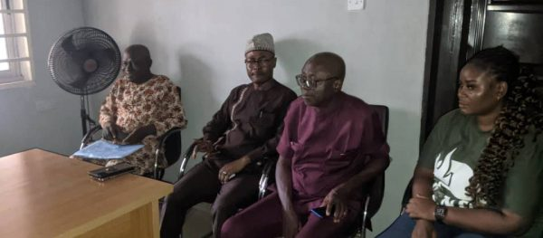

About Us
Who We Are
Media Educational Development Initiatives (MEDI) emerged from the urgent need to combat misinformation, strengthen journalism integrity, and advance public media literacy.
From grassroots training to global policy influence, we have empowered thousands of individuals—journalists, educators, and policymakers—with the tools to navigate today’s rapidly evolving media landscape.
Get Involved
Experienced & Certified Professionals
Our team of experts brings years of experience in media literacy, journalism training, and policy advocacy.
Timely & Reliable Delivery
We ensure impactful solutions reach news organizations, students, and policymakers when they need them most.
High-Quality, Well-Organized Content
Our structured approach guarantees clear, accessible, and impactful media education and advocacy resources.
Drive Impact Through Media Education & Advocacy
Empowering communities with media literacy is essential for combating disinformation, fostering responsible journalism, and promoting peace. MEDIA works across cultures and borders to strengthen media education, support struggling news organizations, and advocate for policies that sustain independent journalism.
Our reach
Through strategic collaborations, policy advocacy, and educational initiatives, MEDIA engages journalists, students, and media professionals worldwide—providing essential resources to build a more informed and resilient society.
What Drives Us
Building and sharing knowledge in journalism and media studies, strengthening capacity of public journalism and leadership, training professionals capable of influencing, with conceptual and methodological rigor, the thinking and practices that are socially relevant to the development of Africa. VisionA world where media serves as a pillar of truth, accountability, and informed citizenship.
Core Values
Integrity
Promoting truth and transparency in journalism.
Education
Empowering individuals with media literacy skills.
Collaboration
Building cross-sector partnerships for greater impact.
Freedom of Expression
Defending press freedom worldwide.
Our Impact Areas
Media Literacy Education
Training students, educators, and citizens in digital literacy and misinformation detection.
Journalism Development
Providing workshops, grants, and fellowships for ethical investigative reporting.
Policy & Advocacy
Shaping laws and regulations that protect media freedom and journalistic integrity.
Research & Innovation
Conducting studies on AI, misinformation, and the role of media in democracy.
Explore Our InitiativesA Trusted Partner in Media Literacy & Development
At Media Education Development Initiatives (MEDI), we are committed to fostering a more informed and responsible media landscape. Through innovative programs, cross-cultural collaborations, and cutting-edge digital tools, we empower individuals and communities to navigate the evolving media space with confidence.
With a strong foundation in research, education, and advocacy, we work to counter disinformation, strengthen journalism, and promote policies that support sustainable media development. Whether you're a student, journalist, educator, or policymaker, you can count on MEDI to be your partner in shaping a more transparent and inclusive media future.

Meet Our Team
Media Educational Development Initiative Africa (MEDIA) is grateful for the foundational contributions, ongoing support, and continued service of the following world-class scholars and practitioners that form our Advisory Board. The principal role of the Advisory Board has been, and is, to drive the overall intellectual and strategic directions of the organization.
CHIBAULA D. SILWAMBA
Lawyer| Diplomat & International Relations| Commissioner for Oaths| Assistant to The Minister| Government Communicator

Fathia Eldakhakhny
Journalist, Media consultant, public speaker, script writer, and trainer.

Dr. Robert Madu
Head, Department of Mass Communications Institute of Management and Technology, Enugu
Be part of the change
Empower media literacy. Defend press freedom. Support ethical journalism — as a volunteer, donor, or advocate.